The electricity grid is in the midst of a historic transformation. Across the United States, Europe, Australia, and India, large-scale battery energy storage systems (BESS) are displacing fossil fuel capacity at an unprecedented pace. Yet the narrative of complete replacement is more complex—and more nuanced—than headlines suggest.
The answer is neither a simple "yes" nor "no." Batteries will progressively replace certain categories of traditional power assets, particularly peaking and mid-merit generation, but will not fully supplant baseload thermal plants in the near to medium term. For India specifically, BESS represents a critical tool for grid stability in a renewable-dominated future, working alongside—rather than replacing—coal capacity over the next decade.
The Global Replacement Trend: Evidence in Motion
The evidence of battery displacement is no longer theoretical. Across developed and emerging markets, battery projects are literally being built on the foundations of retiring coal plants.
In the United Kingdom, SSE is converting Ferrybridge, a site that housed three coal-fired power stations operating for nearly a century, into a 150-megawatt BESS capable of powering 250,000 homes. A second project at Fiddler's Ferry, a coal plant that shut down in 2020, is now transitioning to battery storage. In Australia, the Liddell Power Station is becoming the "Liddell Battery," a 500-megawatt facility with an expected operational date of December 2025, designed specifically to replace a 1,450-megawatt coal generator slated for retirement in mid-2028. NSW approved two additional 4-hour duration BESS projects totaling 4 GWh to manage the grid as coal exits.
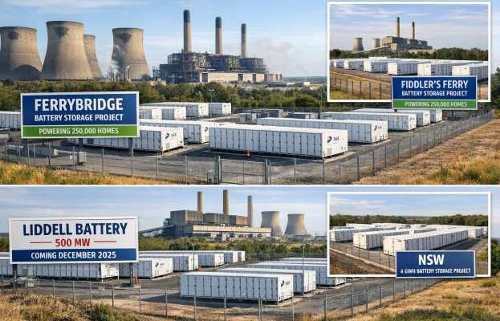
The United States tells a similar story. The Reid Gardner Power Station in Nevada, once a major coal facility, has been replaced by a 220-megawatt battery operated by Energy Vault. Illinois passed legislation enabling battery deployment at nine retired or retiring coal sites, with up to 300 MW of solar and 150 MW of battery capacity planned.
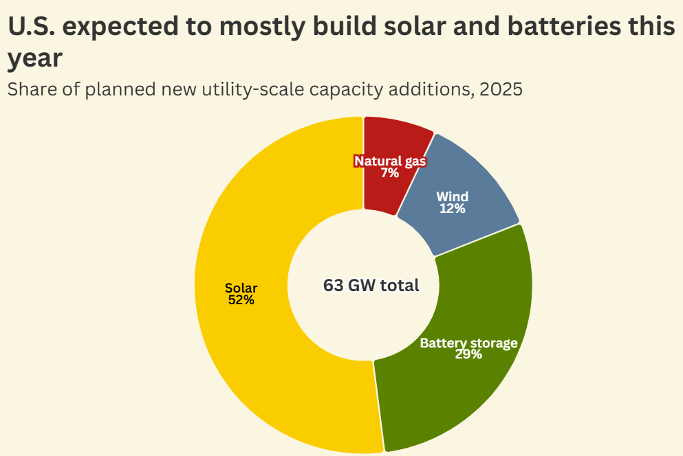
These aren't isolated experiments. In 2025, more than half of all new electricity generation capacity additions in the United States will be solar, followed by batteries at 29% of total capacity. Critically, 93% of all new U.S. power generation added in 2025 is from non-fossil sources. This represents a fundamental economic and technical shift: batteries are not supplementing coal and gas plants; they are systematically replacing them.
The Economic Tipping Point: When Batteries Became Cheaper
The replacement of traditional assets is primarily driven by economics, not ideology. The cost of lithium-ion battery technology has collapsed. Lazard's 2025 analysis of levelized cost of storage (LCOS) shows continued dramatic declines, making battery systems increasingly cost-competitive with fossil fuel alternatives.
In New South Wales, Australia, modeling by RepuTex showed that replacing the retiring Liddell coal plant with 1 GW of solar-backed battery storage would yield 17% lower electricity prices compared to replacement with a gas plant. This is not marginal—it represents a structural advantage that utilities cannot ignore when making capital allocation decisions.
The merchant BESS market offers further proof of this economic viability. Merchant battery storage systems (which operate without fixed contracts, buying low and selling high on wholesale markets) achieved profitability for the first time in 2024, despite zero long-term contracts, driven by declining battery costs and increasing market volatility. This demonstrates that BESS can earn returns on a purely commercial basis, without government subsidies or mandated offtake agreements.
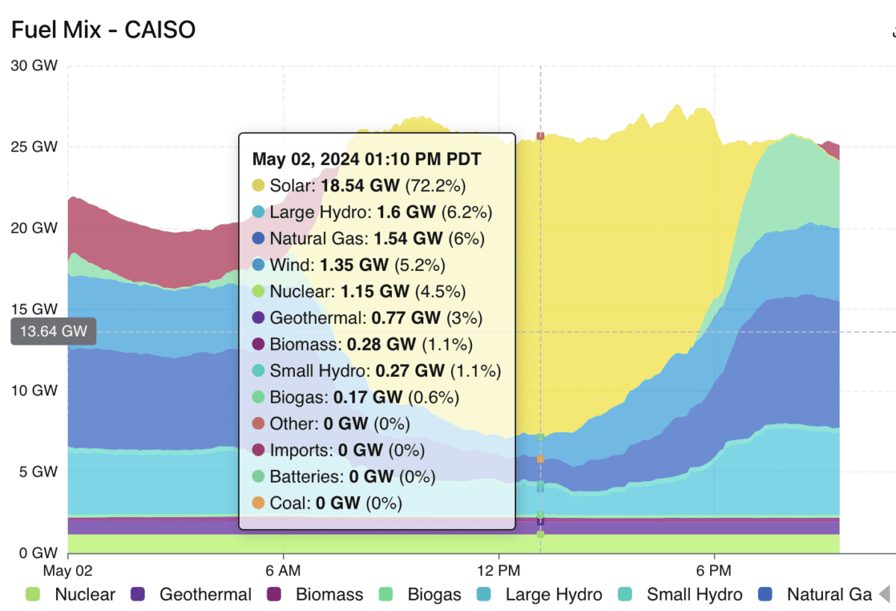
California provides perhaps the clearest example. Battery capacity grew from 0.5 GW in 2018 to 15.8 GW by early 2025, with an additional 8.6 GW planned by 2027. These batteries, charged during daytime solar abundance, now provide electricity during evening peak demand periods, directly replacing the need for gas peaker plants that once dominated that market segment.
India's BESS Scaling: A Different Model
For India, the replacement narrative takes on a distinctive character. Rather than wholesale retirement of coal plants, the government strategy involves colocation of battery systems with existing thermal plants, optimizing operational flexibility without immediate decommissioning.
India's installed BESS capacity has accelerated dramatically: 341 MWh was added in 2024, a sixfold increase from 51 MWh in 2023, though the base remains small at only 0.5 GWh operational capacity as of October 2025. The government has established ambitious targets: 74 GW / 411 GWh of storage capacity by 2032, and 1,840 GWh by 2047, requiring 236 GWh by 2031-32. To achieve this, the Ministry of Power has deployed ₹5,400 crore in viability gap funding (VGF) for 30 GWh of BESS, in addition to ₹3,700 crore already allocated for 13.2 GWh of capacity currently under development.
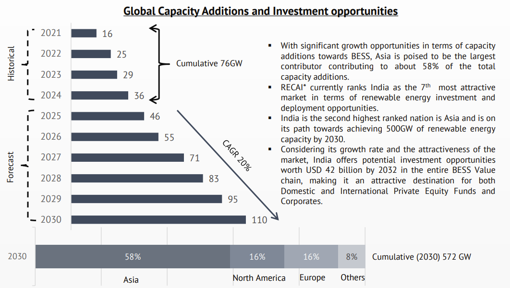
The Indian market is expected to grow from USD 7.8 billion in 2024 to USD 30-32 billion by 2030, with a compound annual growth rate exceeding 25-27%. This growth is driven not by coal retirement, but by the urgent need to integrate 500 GW of renewable capacity by 2030 while maintaining grid stability.
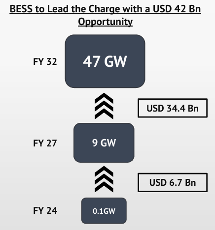
Uniquely, NTPC (National Thermal Power Corporation), India's largest coal power generator, has received government funding to test battery storage installation at coal plants. The operational logic is clear: as solar generation surges during daytime, coal plants would normally be forced to shut down or operate inefficiently. Installing batteries alongside coal plants allows the capture of excess solar energy, which batteries discharge during evening peak demand. This extends coal plant lifespans, maintains grid stability, and avoids the costly wear-and-tear of rapid cycling in thermal units.
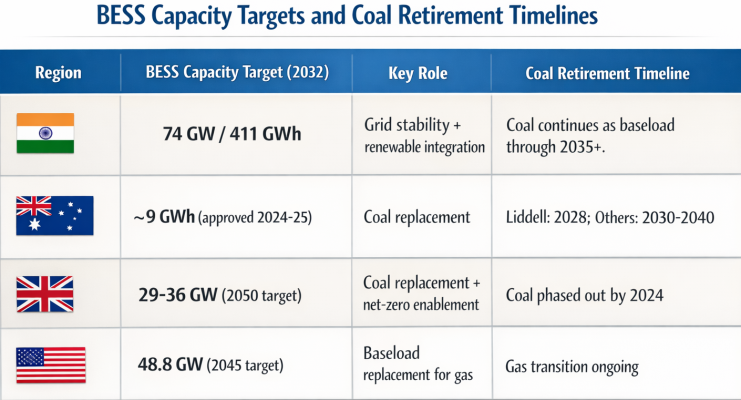
The Technical Constraints: What Batteries Cannot Yet Do
Despite the rapid displacement of peak and mid-merit capacity, batteries face fundamental technical and economic barriers to full replacement of traditional power assets.
Duration is the critical constraint. Current lithium-ion phosphate (LFP) batteries, which dominate the market, deliver full rated output for up to 8 hours at best. This duration is sufficient for daily peak shaving—charging during daytime solar abundance and discharging during evening demand peaks. However, it is fundamentally inadequate for:
- Baseload supply: Continuous 24/7 power provision requires either fossil fuels or multi-day energy storage
- Seasonal storage: Winter demand peaks in temperate climates, when solar generation plummets for weeks
- Emergency reserves: Multi-day grid stress from extreme weather or generation disruptions cannot be met by 4-8 hour batteries
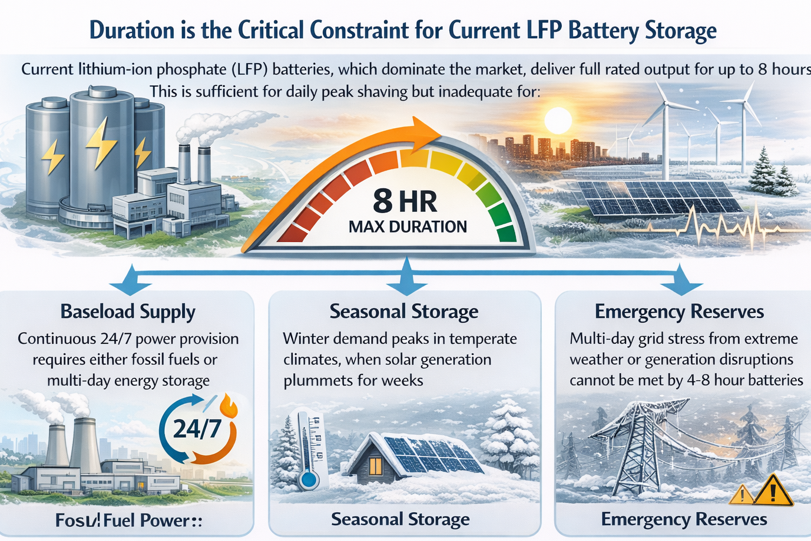
The International Energy Agency projects that to meet net-zero targets, battery storage capacity must increase from approximately 28 GW globally today to nearly 970 GW by 2030—a 35-fold expansion. Even this massive growth will be insufficient if BESS is the only storage technology deployed. Grid modeling indicates that when renewable penetration exceeds 40% of generation, medium-duration storage (4-16 hours) becomes mandatory. Above 80% renewables, the need for long-duration storage becomes critical, and above 90%, batteries alone cannot maintain reliability.
This is not a minor technical detail. When renewables must provide 90% of electricity supply, the system must have sufficient storage to cover not just daily fluctuations, but also multi-week periods when both wind and solar generation are depressed simultaneously—a scenario that occurs during winter in northern climates and during monsoon seasons in tropical regions like India.
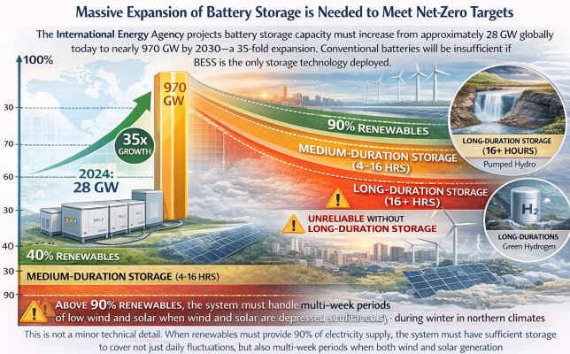
Economic barriers reinforce technical ones. The levelized cost of storage (LCOS) for a 4-hour battery system ranges from $124-226/MWh with tax credits (midpoint ~$175/MWh). Long-duration energy storage—systems capable of 10+ hours of discharge—are substantially more expensive. The U.S. Department of Energy launched its Long Duration Storage Shot in 2021 with an ambitious goal: achieve 90% cost reduction by 2030 for LDES technologies. The fact that a 90% cost reduction target is necessary underscores how unaffordable long-duration storage currently is.
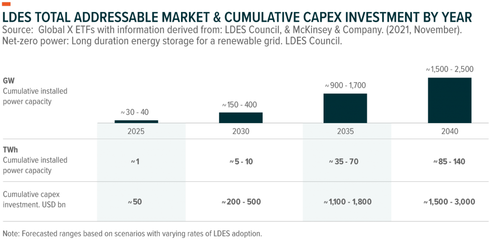
Flow batteries, thermal storage, compressed air energy storage, and other long-duration technologies remain in early commercialization stages. Iron-air batteries and other advanced chemistries show promise for 100-hour durations, but deployment at scale remains years away and face manufacturing, supply chain, and cost hurdles.
What Batteries Will Replace—And What They Won't
The evidence and technical analysis point to a clear segmentation of the power generation market:
Batteries are replacing or will replace:
- Peaking plants (gas turbines operating 10-30% of the time): Batteries achieve faster response times (milliseconds vs. minutes), lower operating costs, and zero fuel requirements. California is already experiencing this replacement.
- Mid-merit capacity (combined-cycle gas plants operating 40-60% of the time): As battery costs decline further, solar-plus-battery systems will become cheaper than new gas plants. This transition is already underway globally.
- Certain grid services (frequency regulation, voltage support, synthetic inertia, black start): Batteries excel at these millisecond-response functions and are displacing synchronous condensers and other mechanical devices.
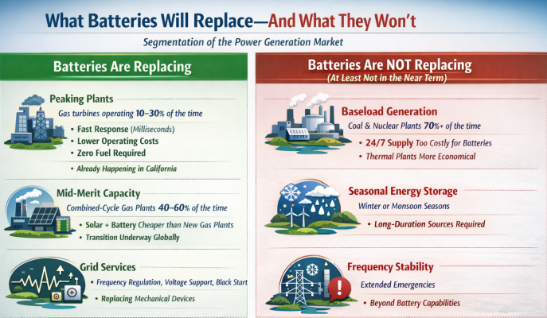
Batteries are NOT replacing—at least not in the near term:
- Baseload thermal generation (coal and nuclear plants operating 70%+ of the time): The cost and duration of batteries required to provide 24/7 supply would be astronomical. Thermal plants will remain economically superior for baseload provision.
- Seasonal energy storage: When solar production falls 90% during winter months (northern hemisphere) or during monsoon seasons (India, Southeast Asia), thermal or other long-duration sources must provide the primary supply.
- Frequency stability in all scenarios: While batteries excel at providing frequency support during normal operations, they deplete rapidly if called upon for extended emergency reserve duty.
India's Path Forward: Complementary, Not Replacement
India's approach to this question is pragmatic and distinct from Western markets. Rather than pursuing complete coal retirement, India's energy strategy embraces what might be termed "cooperative displacement"—using BESS to optimize the role of existing thermal capacity rather than eliminate it.
India's coal capacity is expected to continue growing through the 2030s, with approximately 80 GW of new coal-fired capacity planned by 2032, despite aggressive renewable expansion. This apparent paradox reflects India's acute demand growth: electricity consumption is rising faster than in developed markets, driven by urbanization, industrialization, and electrification of transport and heating.
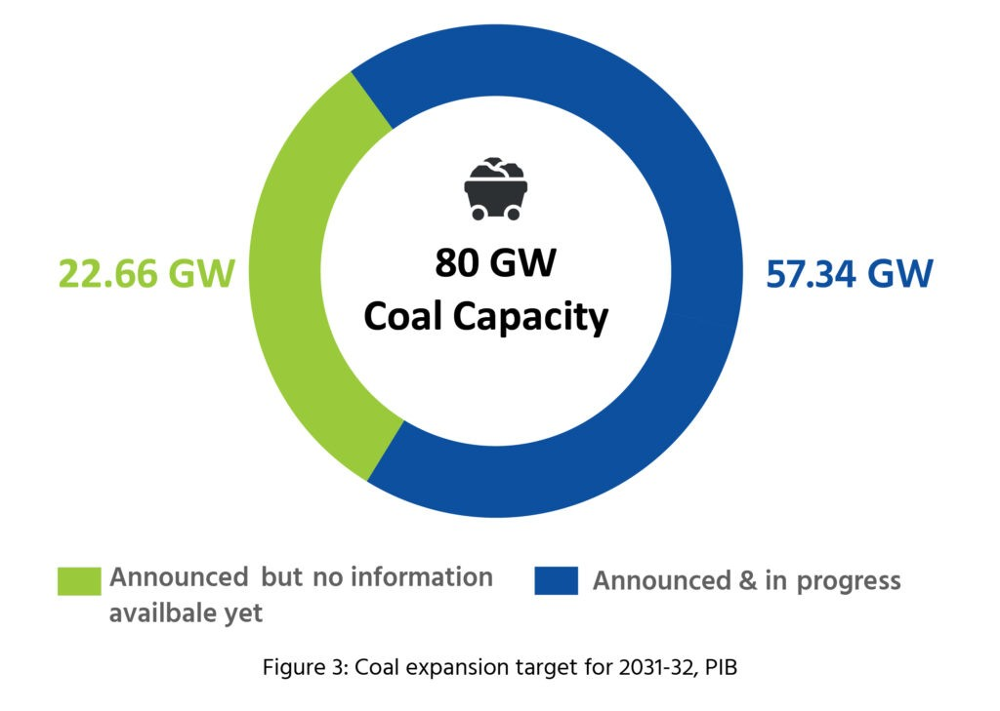
NTPC's pilot program of installing batteries at coal plants addresses this directly. As India's solar capacity reaches 500 GW by 2030, daytime solar generation will routinely exceed demand, forcing thermal plants into partial shutdowns or inefficient minimum load operation. Batteries at coal plants would:
- Absorb excess solar energy during high-production periods
- Discharge stored energy during evening peak demand (18:00-23:00), when solar is no longer available but demand remains high
- Allow coal plants to maintain stable, economical output rates
- Extend the operational life of existing plants by reducing thermal stress from rapid ramping
From an economic perspective, this makes sense. The marginal cost of adding 100 MWh of battery storage at an existing 1,000 MW coal plant is far lower than building equivalent solar-plus-battery capacity from scratch. It leverages sunk costs in transmission infrastructure, substations, and land use.
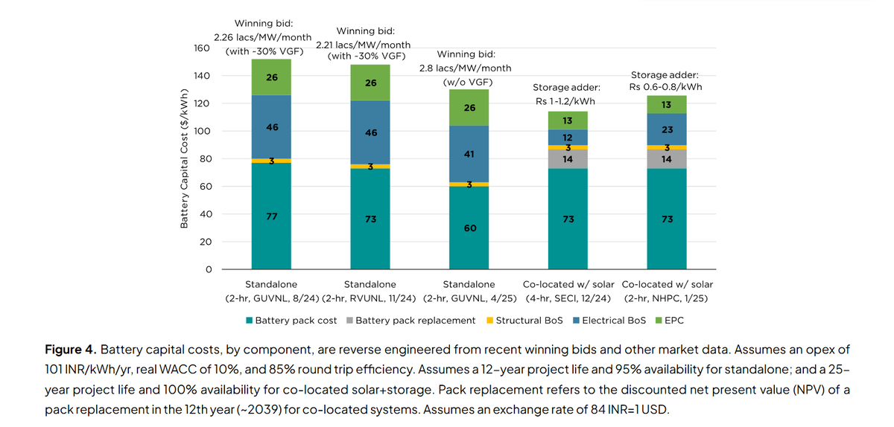
However, this approach has implications for long-term decarbonization. By making coal plants more profitable and operationally stable, BESS investment in coal colocation may extend their operational lifespans by a decade or more. While BESS alone won't decarbonize the grid, the government's broader strategy—scaling renewables aggressively while using BESS for flexibility—positions BESS as an enabler of higher renewable penetration, not a complete replacement technology.
Conclusion: The Nuanced Answer
Batteries will replace traditional power assets, but not completely and not in the way many assume.
In developed markets with mature renewable infrastructure (UK, Australia, California), BESS is directly displacing fossil fuel capacity, particularly gas peaker and mid-merit plants. Retiring coal plant sites are being repurposed as battery installations, leveraging existing grid connections and infrastructure. This is economically driven and accelerating.
In emerging markets like India, the replacement is more complementary: BESS enables coal plants to operate more efficiently alongside high renewable penetration, extending their lives rather than immediately retiring them. Over time, as battery costs fall further and long-duration storage technologies mature, India's coal capacity will eventually decline—but this will be a 15–20-year process, not an immediate transition.